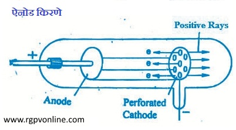

Q.6 : प्रोटॉन की खोज किस प्रकार हुई ? ऐनोड किरणों के गुण लिखिए।
उत्तर - प्रोटॉन की खोज गोल्डस्टीन ने सन् 1886 में एक प्रयोग के दौरान की। गोल्डस्टीन ने विसर्जन नलिका में छिद्र युक्त कैथोड का प्रयोग कर यह सिद्ध किया कि नलिका में कैथोड किरणों के अतिरिक्त अन्य प्रकार की किरणें भी उपस्थित रहती हैं जो कैथोड के छिद्रों से बाहर निकल जाती हैं और धन विद्युत् युक्त होती हैं। ये किरणें ऐनोड से कैथोड की ओर चलती हैं। इनको ऐनोड किरणें (anode rays) कहते हैं।
ये कण कैथोड के छिद्रों (canal) को पार करके आगे निकल जाते हैं। वैज्ञानिक गोल्डस्टीन ने इन किरणों को कैनाल किरणें (canal rays) कहा। इन्हें धनात्मक किरणें (positive rays) भी कहा जाता है। इन किरणों के गुणधर्मों का अध्ययन कर निम्नलिखित निष्कर्ष निकाले गये–

चित्र 6.1 ऐनोड किरणे
(i) इन कणों पर धन आवेश होता है।
(ii) इन कणों का भार विसर्जन नलिका में उपस्थित गैसीय पदार्थ (gaseous matter) पर निर्भर करता है। यह उस गैस के परमाणु भार के लगभग बराबर होता है।
(ii) इन कणों को ऐनोड किरणें या धनात्मक किरणें कहा गया है, परन्तु यदि विसर्जन नलिका में हाइड्रोजन गैस भरी हो तो प्राप्त ऐनोड किरणों में उपस्थित कणों को प्रोटॉन नाम दिया जायेगा। एक प्रोटॉन में धन आवेश, इलेक्ट्रॉन के ऋण आवेश के तुल्य रहता है तथा इनका भार हाइड्रोजन के परमाणु के लगभग बराबर होता है। बाद में सन् 1911 में रदरफोर्ड ने सोने (gold) की पतली पन्नी पर α-कणों की बौछार से भी प्रोटॉन प्राप्त किये तथा यह सिद्ध किया कि सभी तत्वों के परमाणुओं में प्रोटॉन उपस्थित होते हैं। प्रोटॉन का द्रव्यमान 1.0073 amu होता है। अर्थात् "प्रोटॉन, इकाई धन आवेश (unit positive charge) युक्त कण हैं जिनका भार हाइड्रोजन के परमाणु भार के बराबर होता है।"
ऐनोड किरणों के गुण (Properties of Anode Rays)- ऐनोड किरणों के प्रमुख गुण निम्नलिखित हैं -
(i) ये किरणें सीधी रेखा में चलती हैं, किन्तु इनकी वेधन क्षमता कैथोड किरणों से कम होती है।
(ii) ये किरणे फोटोग्राफिक प्लेट को प्रभावित करती हैं।
(iii) ऐनोड किरणों का आवेश (e) एवं द्रव्यमान (m) का अनुपात विसर्जन नलिका में भरी हुई गैस पर निर्भर करता है।
(iv) ये ऐनोड किरणें प्रतिदीप्ति (fluorescence) तथा स्फुरदीप्ति (phosphorescence) उत्पन्न करती हैं।
(v) ऐनोड किरणों में पाए जाने वाले कणों का द्रव्यमान विसर्जन नलिका में ली गई । गैस के परमाणु द्रव्यमान (atomic mass) के बराबर होता है।
(vi) ऐनोड किरणें प्रबल चुम्बकीय क्षेत्र या विद्युतीय क्षेत्र में विक्षेपित होकर ऋणात्मक प्लेट की ओर जाती हैं, इससे ज्ञात होता है कि इन किरणों पर धन आवेश होता है।
(vii) ऐनोड किरणें यांत्रिक प्रभाव उत्पन्न करती हैं तथा मार्ग में उपस्थित हल्के पहिए को घुमा सकती हैं।